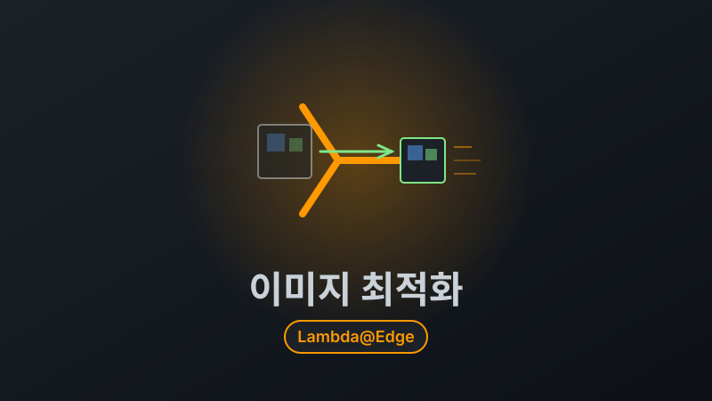
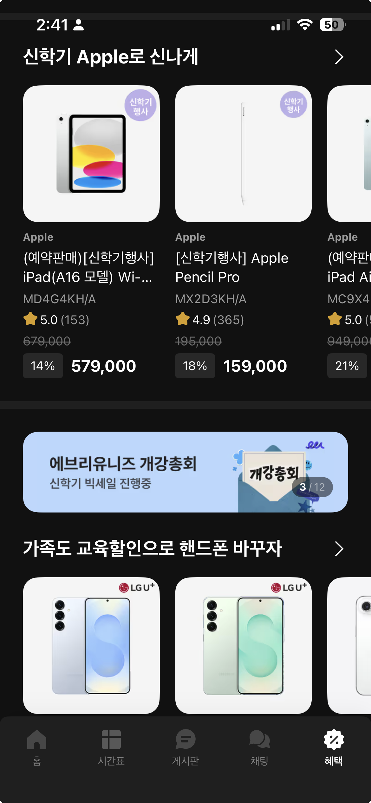
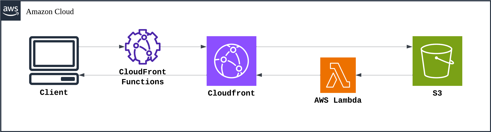

실시간 이미지 최적화 시스템
목차
- 배경: 트래픽 30% 증가, 비용은 어떻게?
- 문제 분석: 원본 이미지 서빙의 낭비
- 아키텍처 설계
- 핵심 구현 1: CloudFront Functions로 어뷰징 방지
- 핵심 구현 2: Lambda@Edge로 On-demand 처리
- 핵심 구현 3: 캐시 무효화 전략
- 결과: 비용 75% 절감, 속도 50% 개선
- 트러블슈팅
배경: 트래픽 30% 증가, 비용은 어떻게?
에브리타임은 대학생 커뮤니티 앱입니다. 2024년 3월, 우리 커머스 서비스가 앱 내 전용 '혜택탭'으로 노출되기 시작했습니다.

변화의 규모:
- 거의 모든 페이지에 배너와 상품 이미지 노출
- 출시 후 트래픽 30% 급증
- CloudFront 비용이 지속적으로 증가하는 추세
실제 CloudFront 비용 추이:
2024년 1월: 기준점
2024년 2월: 20% 증가
2024년 3-12월: 평균 유지
2025년 1월: 전년 대비 24.6% 추가 증가월별 데이터 전송량도 400GB에서 12,600GB까지 증가.
문제 분석: 원본 이미지 서빙의 낭비
기존 시스템의 문제
1. 원본 이미지를 그대로 전송
- 업로드: 1920x1080 (300KB) 이미지
- 실제 사용: 400x300 크기로 리사이징해서 표시
- 전송: 300KB 전체를 다운로드 😱
- 낭비: 200KB (66%)2. 서비스별 요구 크기가 제각각
- 썸네일: 200x200
- 리스트뷰: 400x300
- 상세페이지: 800x600
- 배너: 1200x400
하지만 시스템은 모든 경우에 동일한 원본 이미지를 전송했습니다.
3. 차세대 포맷 미지원
- JPEG (100KB)
- WebP (60KB) - 40% 절감
- AVIF (45KB) - 55% 절감JPEG만 지원했기 때문에 WebP, AVIF를 지원하는 모던 브라우저에서도 큰 파일을 다운로드했습니다.
PoC: 실제 압축률 측정
실제 프로덕션 이미지로 측정한 결과:
테스트 대상: 상품 상세 이미지 (442px 사용 중)
- 원본: JPEG, 35.1KB
포맷만 변경:
WebP: 9.9KB (71.7% 감소)
AVIF: 5.2KB (85.2% 감소)포맷 + 사이즈 변경 (442px):
WebP: 5.4KB (84.6% 감소)
AVIF: 3.3KB (90.6% 감소)결론: AVIF가 압축률은 최고지만, Opera Mini 등 일부 브라우저에서 미지원. WebP는 IE를 제외한 모든 브라우저에서 지원하므로 WebP를 기본으로 선택하되, <picture> 태그로 AVIF도 지원하는 방향을 채택했습니다.
4. 클라이언트 단에서 크롭
예시 코드:
<img src="original.jpg" style="width: 200px; height: 200px; object-fit: cover;">이미지는 300KB를 전부 다운로드하고, 브라우저에서 200x200으로 잘라서 표시. UX 저하 + 대역폭 낭비.
아키텍처 설계
전처리 vs 후처리 (On-demand)
이미지 최적화 방식은 크게 두 가지로 나뉩니다. 이미지를 업로드할 때 미리 여러 크기로 생성해 두는 전처리 방식과, 사용자 요청 시 실시간으로 변환하는 후처리(On-demand) 방식입니다.
| 기준 | 전처리 (S3 Pre-processing) | 후처리 (Lambda@Edge On-demand) |
|---|---|---|
| 처리 시점 | 업로드 시 사전 생성 | 요청 시 실시간 변환 |
| 저장 공간 | 크기별/포맷별 모두 저장 → 용량 과다 | 원본만 저장 |
| 유연성 | 새 크기 추가 시 전체 재생성 필요 | 파라미터만 변경하면 즉시 대응 |
| 응답 속도 | 빠름 (이미 생성됨) | 첫 요청만 느림 (이후 캐시) |
| 비용 구조 | 저장 비용 높음 | 요청당 처리 비용 |
후처리(Lambda@Edge) 방식을 선택한 이유:
- 서비스별 이미지 크기 요구사항이 다양하고 변경이 잦아, 전처리 시 모든 조합을 사전 생성하는 것은 비현실적
- CloudFront 캐시와 네이티브 통합되어 첫 요청 이후에는 전처리와 동일한 응답 속도
- 원본만 S3에 저장하므로 저장 비용 최소화
- 새로운 크기나 포맷 추가 시 코드 변경 없이 파라미터만 추가하면 즉시 대응 가능
전체 아키텍처

요청 처리 흐름
sequenceDiagram
participant Client as 브라우저
participant CF_Func as CF Functions
(Viewer Request)
participant CF as CloudFront
(캐시)
participant Lambda as Lambda@Edge
(Origin Response)
participant S3 as S3
Client->>CF_Func: ?w=387&h=287&f=webp&q=75
CF_Func->>CF_Func: 검증 / 10px 올림 정규화 / 쿼리 정렬
CF_Func->>CF: ?f=webp&h=290&q=80&w=390
alt 캐시 HIT
CF-->>Client: 캐시된 이미지 응답 (Lambda 실행 없음)
else 캐시 MISS
CF->>S3: 원본 이미지 요청
S3-->>CF: 원본 이미지 반환
CF->>Lambda: Origin Response 트리거
Lambda->>Lambda: 이미지 리사이징 + 포맷 변환
Lambda-->>CF: 최적화된 이미지
CF->>CF: 캐시 저장
CF-->>Client: 최적화된 이미지 응답
end이벤트 트리거 선택 이유
CloudFront는 4가지 이벤트 트리거를 제공합니다. 각 트리거의 실행 시점과 역할이 다르기 때문에, 비용과 기능 요구사항에 맞는 배치가 중요합니다.
| 트리거 | 실행 시점 | 실행 빈도 | 사용 가능 서비스 |
|---|---|---|---|
| Viewer Request | 요청 수신 직후 (캐시 확인 전) | 모든 요청 | CF Functions, Lambda@Edge |
| Viewer Response | 응답 반환 직전 | 모든 요청 | CF Functions, Lambda@Edge |
| Origin Request | 캐시 MISS → Origin 전달 시 | 캐시 MISS만 | Lambda@Edge |
| Origin Response | Origin 응답 수신 후 (캐시 저장 전) | 캐시 MISS만 | Lambda@Edge |
이 중 Viewer Request와 Origin Response 두 가지를 선택했습니다.
- Viewer Request (CF Functions): 파라미터 검증과 정규화는 캐시 확인 전에 실행되어야 합니다. 정규화 전 쿼리로 캐시 키가 생성되면 동일한 이미지 요청도 캐시를 활용하지 못하기 때문입니다. 모든 요청에서 실행되므로 비용이 저렴한 CF Functions를 사용했습니다.
- Origin Response (Lambda@Edge): 이미지 리사이징은 캐시 MISS일 때만 실행하면 됩니다. Origin Request가 아닌 Origin Response를 선택한 이유는, S3에서 원본 이미지를 받은 직후에 변환하여 캐시에 저장할 수 있어 한 번의 처리로 이후 동일 요청은 모두 캐시에서 서빙되기 때문입니다.
URL 파라미터 설계
https://cdn.example.com/products/123.jpg?w=400&h=300&f=webp&q=80
- w: width (너비)
- h: height (높이)
- f: format (webp, avif, jpg, png)
- q: quality (1-100, 기본 80)핵심 구현 1: CloudFront Functions로 어뷰징 방지
문제: 악의적 요청으로 비용 폭증
Lambda@Edge는 요청당 과금입니다. 악의적인 사용자가 다음과 같은 요청을 보내면?
?w=1&h=1 // 1x1 픽셀
?w=2&h=2 // 2x2 픽셀
?w=3&h=3 // 3x3 픽셀
...
?w=5000&h=5000 // 5000x5000 픽셀각각 Lambda 실행 → 캐시되지 않음 → 비용 폭증 💸
해결: CloudFront Functions로 검증/정규화
검증/정규화 로직은 Lambda@Edge에서도 구현할 수 있지만, CloudFront Functions를 별도로 분리했습니다.
| 기준 | CloudFront Functions | Lambda@Edge |
|---|---|---|
| 사용 가능 트리거 | Viewer Request/Response | 4개 전부 (Viewer/Origin × Request/Response) |
| 실행 비용 | 요청 100만 건당 $0.10 | 요청 100만 건당 $0.60 |
| 실행 속도 | < 1ms | 5ms ~ 수 초 |
| 제한 | 네트워크/파일 I/O 불가, 최대 10KB | 제한 없음 |
Lambda@Edge도 Viewer Request에서 동일한 검증 로직을 실행할 수 있지만, 검증/정규화는 네트워크 I/O가 필요 없는 단순 연산이므로 CF Functions의 제한에 해당하지 않습니다. 모든 요청에서 실행되는 Viewer Request 특성상, 비용이 1/6이고 속도가 10배 빠른 CF Functions가 적합합니다.
또한 정규화는 반드시 캐시 확인 전(Viewer Request)에 실행되어야 합니다. 만약 Origin Request에서 처리했다면, 정규화 전 쿼리로 캐시 키가 생성되어 동일한 이미지 요청도 캐시를 활용하지 못하게 됩니다.
정규화 로직:
예시 코드(의사코드):
function handler(event) {
var params = event.request.querystring;
// 1. w, h: 범위 제한(50~2000) + 10px 단위 올림
// 예: w=387 → w=390, w=5000 → w=2000
normalize(params.w, MIN=50, MAX=2000, STEP=10);
normalize(params.h, MIN=50, MAX=2000, STEP=10);
// 2. q: 품질 범위 제한(10~100) + 10단위 올림
normalize(params.q, MIN=10, MAX=100, STEP=10);
// 3. f: 허용 포맷만 통과 (jpg, jpeg, png, webp, avif)
validateFormat(params.f);
// 4. 쿼리 키 정렬 → 동일 파라미터 조합이 같은 캐시 키로 매핑
// ?w=390&f=webp → ?f=webp&w=390
sortQueryString(params);
return request;
}효과:
?w=387&h=287→?w=390&h=290(10px 단위 정규화)?w=755→?w=760(올림)- 캐시 키 개수: 1,950개 → 195개 (10배 감소)
10px 단위 선택 이유:
정규화 단위를 결정할 때 100px과 10px을 비교했습니다.
- 100px 단위의 한계: 서비스 요구사항 상 100px 단위로 떨어지지 않는 이미지가 다수 존재 (예: 썸네일 142px, 리스트뷰 342px, 배너 768px). 반올림 시 원본과 크기 차이가 눈에 띄는 경우 발생
- 10px 단위 채택: 실제 서비스에서 10px 단위로 떨어지는 이미지 규격이 많아 자연스럽게 정확한 크기 매칭 가능
- 품질 저하 없이 캐시 효율을 확보하는 현실적인 균형점
핵심 구현 2: Lambda@Edge로 On-demand 처리
이미지 리사이징과 포맷 변환은 Node.js 기반 이미지 처리 라이브러리인 Sharp를 활용하여 구현했습니다.
예시 코드:
import { S3Client, GetObjectCommand } from '@aws-sdk/client-s3';
import sharp from 'sharp';
import type { CloudFrontResponseEvent, CloudFrontResponseResult } from 'aws-lambda';
const s3 = new S3Client();
export const handler = async (event: CloudFrontResponseEvent): Promise<CloudFrontResponseResult> => {
const response = event.Records[0].cf.response;
const request = event.Records[0].cf.request;
const params = new URLSearchParams(request.querystring);
// 1. 원본 이미지 가져오기
const key = request.uri.substring(1);
const { Body } = await s3.send(new GetObjectCommand({
Bucket: 'my-images-bucket',
Key: key,
}));
const imageBuffer = Buffer.from(await Body!.transformToByteArray());
// 2. 파라미터 파싱
const width = parseInt(params.get('w') ?? '') || null;
const height = parseInt(params.get('h') ?? '') || null;
const requestedFormat = (params.get('f') ?? 'jpg').toLowerCase();
const quality = parseInt(params.get('q') ?? '') || 80;
// 3. 이미지 처리
let image = sharp(imageBuffer);
if (width || height) {
image = image.resize({
width: width ?? undefined,
height: height ?? undefined,
fit: 'inside', // 비율 유지
withoutEnlargement: true, // 원본보다 크게 안 함
});
}
// 포맷 변환
const formatMap = { webp: 'webp', avif: 'avif', png: 'png', jpg: 'jpeg', jpeg: 'jpeg' } as const;
const outputFormat = requestedFormat in formatMap
? formatMap[requestedFormat as keyof typeof formatMap]
: 'jpeg';
image = outputFormat === 'jpeg'
? image.jpeg({ quality })
: image[outputFormat]({ quality });
const buffer = await image.toBuffer();
// 4. 응답 생성
return {
status: '200',
headers: {
'content-type': [{ key: 'Content-Type', value: `image/${outputFormat}` }],
'cache-control': [{ key: 'Cache-Control', value: 'public, max-age=31536000' }],
'content-length': [{ key: 'Content-Length', value: buffer.length.toString() }],
},
body: buffer.toString('base64'),
bodyEncoding: 'base64',
};
};Lambda 메모리 최적화
Lambda는 GB·초(GB-second) 단위로 과금됩니다. 할당 메모리 × 실행 시간으로 비용이 결정되며, 메모리를 늘리면 비례하여 CPU와 네트워크 대역폭도 함께 증가합니다. 즉, 메모리를 2배로 올리면 CPU 성능도 2배가 되어 처리 시간이 절반 이하로 줄어들 수 있고, 결과적으로 GB·초 기준 비용이 오히려 감소하는 경우가 있습니다. 이 특성을 활용하여 메모리를 단계별로 올려보면서 처리 속도와 비용의 최적점을 찾았습니다.
메모리별 성능 비교:
- 512MB: 평균 5초, 타임아웃 빈번
- 1024MB: 평균 2초, 타임아웃 거의 없음
- 2048MB: 평균 1.8초, 성능 대비 비용 효율 낮음
비용 분석 예시:
512MB × 5초 = 2,500MB·초 (처리 느림, 타임아웃 발생)
1024MB × 2초 = 2,048MB·초 (더 빠르면서 비용도 유사)선택: 1024MB
- 메모리를 2배로 늘렸지만 처리 시간이 2.5배 줄어 오히려 GB·초 기준 비용이 감소
- 타임아웃 85% 감소(20% → 3%)로 사용자 경험 대폭 개선
핵심 구현 3: 캐시 무효화 전략
캐싱을 도입할 때는 항상 무효화 전략도 함께 고려해야 합니다. 상품 이미지가 교체되면 CloudFront에 캐시된 리사이즈 이미지도 무효화해야 하기 때문입니다. 두 가지 방식을 비교했습니다.
URL 버저닝 vs S3 이벤트 트리거:
| 방식 | 장점 | 단점 |
|---|---|---|
URL 버저닝 (?v=2) |
구현 단순 | 어드민/API 등 이미지 URL 참조하는 모든 곳 수정 필요 |
| S3 이벤트 트리거 | 이미지 업로드 경로와 무관하게 중앙 처리 | Lambda 추가 구현 필요 |
S3 이벤트 트리거 방식을 채택한 이유:
어드민에서 이미지를 업로드하는 경로가 상품 등록, 배너 관리, 프로모션 관리 등 다양했습니다. 각 경로마다 URL 버저닝 로직을 추가하는 것보다, S3에 이미지가 업로드되는 이벤트를 감지하여 중앙에서 처리하는 것이 개발 공수 면에서 효율적이었습니다.
sequenceDiagram
participant Admin as 어드민
participant S3 as S3
participant Lambda as Lambda
participant CF as CloudFront
Admin->>S3: 이미지 업로드 (PutObject)
S3->>Lambda: S3 Event 트리거
Lambda->>CF: CreateInvalidation (캐시 무효화)
CF->>CF: 해당 이미지 캐시 삭제
Note over CF: 다음 요청 시
Lambda@Edge가 재생성월 이미지 변경 건수가 100회 미만이므로 CloudFront Invalidation 무료 범위(월 1,000건) 내에서 운영 가능하며, 추가 비용이 발생하지 않습니다.
결과: 비용 75% 절감, 속도 50% 개선

비용 절감
배포는 단계적으로 진행했습니다.
- 5월 15일: 혜택탭 전체 적용
- 5월 20일: 상품 이미지, 배너 이미지 적용
| 시점 | 요청 수 | 데이터 전송량 | 절감률 |
|---|---|---|---|
| 4월 3일 (적용 전) | 360만 건 | 419.71GB | 기준 |
| 5월 26일 (적용 후) | 475만 건 (+31%) | 132.49GB | 68% |
요청이 115만 건(31%) 더 많았지만, 전송량은 오히려 약 3배 감소했습니다. 이미지 최적화가 없었다면 전송량 550GB로 예상되었으나 실제 132GB로 집계되었습니다.
- 실측 비교(4/3 → 5/26): CloudFront 데이터 전송 비용 68% 절감
- 트래픽 증가 반영 추정 비교(최적화 미적용 가정 550GB 대비): 이미지 전달 총비용 기준 약 75% 절감
성능 개선
| 지표 | Before | After | 개선률 |
|---|---|---|---|
| 평균 이미지 크기 | 300KB | 80KB | 73% |
| 페이지 로딩 속도 | 4.2초 | 2.1초 | 50% |
상품 리스트 페이지 기준, 20개 상품 이미지 총 전송량이 6MB(JPEG 원본)에서 1.2MB(WebP 리사이징)로 줄어 로딩 속도가 4.2초에서 2.1초로 50% 개선되었습니다.
트러블슈팅
1. OOM (Out Of Memory) - 대용량 이미지
| 구분 | 내용 |
|---|---|
| 증상 | 7952 × 5304 해상도 이미지 처리 시 Lambda OOM 발생 |
| 원인 | Sharp(libvips) 리사이징 시 입력/중간/출력 버퍼 동시 할당으로 메모리 초과 |
| 해결 | 4000px 초과 이미지는 리사이징 건너뛰고 원본 반환 |
디코딩된 픽셀 데이터만 약 161MB(width × height × 4 바이트)이지만, Sharp(libvips)는 리사이징 과정에서 입력 버퍼 + 중간 버퍼 + 출력 버퍼를 동시에 할당하여 총 400~500MB 이상을 사용합니다(Sharp memory usage 관련 이슈). 1024MB Lambda에서 디코딩만으로는 OOM이 발생하지 않지만, 리사이징 처리 전체를 포함하면 메모리 한계를 초과합니다. 2GB로 증설해도 초대형 이미지는 여전히 OOM 위험이 있으므로, 현실적인 제한선을 두는 것이 필요했습니다.
2. Lambda 타임아웃 - 원본 응답 불가
| 구분 | 내용 |
|---|---|
| 증상 | 처리 시간이 30초를 초과하면 응답 자체가 없음 |
| 원인 | Lambda 자체가 종료되어 catch 블록도 실행 안 됨 → 원본 반환도 불가 |
| 해결 | Promise.race로 28초 타임아웃을 걸어 시간 초과 시 원본 이미지 반환 |
CloudFront Lambda@Edge는 30초 제한이므로, 2초 여유를 두고 타임아웃을 설정했습니다.
3. 확장자 없는 이미지 파일
| 구분 | 내용 |
|---|---|
| 증상 | product-image 같은 확장자 없는 파일이 리사이징 대상에서 제외됨 |
| 원인 | 파일명의 확장자로 이미지 여부를 판단하는 로직 |
| 해결 | S3 응답의 Content-Type 헤더로 이미지 여부 판단으로 변경 |
기술 스택
| 분류 | 기술 |
|---|---|
| CDN | CloudFront |
| 스토리지 | S3 |
| 이미지 처리 | Lambda@Edge (Node.js 24, Sharp) |
| 요청 검증 | CloudFront Functions |